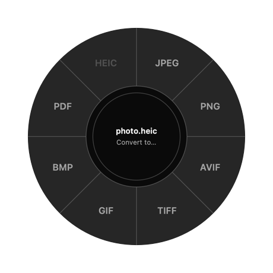

Never worry about converting again.
A free menu-bar app that makes every drag just work and turns any file into any format, 100% on your Mac.
Drop a photo or video here
Drag a tile into the chat, then flip Morphlo on and try again.
The video couldn't load. Download the MP4 (3.6 MB).
Enjoying Morphlo? It's free and open source. A star on GitHub helps other people find it.
Star on GitHub01 / just drag
Zero-touch. No clicks, no pop-ups.
Morphlo swaps the file mid-drag, before the destination reads it. iPhone HEIC photos arrive as full-quality JPEG. Videos arrive as the real video, every frame plus audio, instead of a single still.
from
- Photos
- Finder
- Desktop
- Dock stack
to
- Claude
- ChatGPT
- Gmail
- Dropbox
- Slack
- any upload box
smart routing
Finder, Mail, Messages, Notes, the Desktop and the Trash get the untouched original. Inside Photos, nothing is touched.
videos for AI
Prefer pictures? Switch AI chats to receive still frames plus a contact sheet instead of the video.
works everywhere
Any website or upload box. An auto-hiding Dock and multiple displays are fine too.
02 / convert
Any file, any format. One wheel.
Drop a file on the convert wheel and pick a segment. Keep the original (the new file lands next to it) or replace it (the original goes to the Trash). Hold ⌥ to flip once.
Five ways to open it
- ⇧Tap Shift mid-drag. A round drop disc pops up right under your cursor.
- ⌃⌥MOpen the drop disc anywhere. Both shortcuts can be changed.
- ⌥⌘KSelect files in Finder and convert them straight away.
- right-clickConvert with Morphlo from Finder's Quick Actions.
- Click the butterfly in the menu bar for the drop disc. It stays open until you click again; drag its center to move it. Right-click the butterfly for settings.

03 / privacy
100% local.
- 01Never connects to the internet.Verified: zero sockets. No auto-updater phoning home.
- 02Nothing uploaded. No accounts, no tracking.No analytics, no telemetry, nothing to sign up for.
- 03Only built-in macOS frameworks.ImageIO, AVFoundation, Core Audio, PDFKit, TextKit, Photos and on-device Speech. Nothing else to install.
Fetching originals from iCloud Photos is optional and off by default. Transcripts, if you turn them on, are made on device.
04 / formats
What turns into what.
Type an extension, pick one below, or drop a file anywhere on this box. Only its name is read; nothing is uploaded.
can become
Pick a format to change the command. The same thing happens in the wheel.
Not offered: MP3 encoding, WebM, MKV, OGG and WebP output. macOS can't encode them natively, and Morphlo doesn't bundle extra encoders.
05 / install
Up and running in a minute.
# signed & notarized by Apple: opens with no warnings# open it, drag Morphlo to Applicationsuninstall: drag Morphlo.app to the Trash
$ brew tap mocinjay/tap && brew trust mocinjay/tap && brew install --cask morphlo
uninstall: brew uninstall --cask morphlo
$ npx morphlo
# downloads the signed app from GitHub Releasesuninstall: npx morphlo uninstall
first launch
Allow Photos access (Full Access). Morphlo needs it to grab your originals.
optional
Accessibility to spot AI-chat tabs in browsers and detect the Dock. Speech recognition for transcripts. Finder automation for ⌥⌘K.
requires
macOS 14 Sonoma or later, on Apple Silicon or Intel.
06 / faq
Questions.
Is it really free?
Yes. Morphlo is free and open source under the MIT license. No trial, no paid tier, no account.
Does it upload anything?
No. Every conversion runs on your Mac with built-in macOS frameworks, and Morphlo never connects to the internet. The only optional network step, fetching originals that live only in iCloud Photos, is done by macOS and is off by default.
Why do Claude and websites reject HEIC?
HEIC is the iPhone's default photo format, but many websites and AI chats only accept JPEG, PNG and friends. Morphlo hands them a full-quality JPEG during the drag, so you never see the error.
Does it change my original files?
Not unless you ask. Drag fixes use a converted copy, and Finder, the Desktop and the Trash always get the original. In the convert wheel, "keep original" puts the new file next to it. "Replace" moves the original to the Trash, so you can still get it back.
What about videos?
Dragging a video out of Photos often gives websites a single still frame. With Morphlo they get the full video, every frame plus audio. You can switch AI chats to receive still frames and a contact sheet instead, and optionally add an on-device transcript.
How do I uninstall?
brew uninstall --cask morphlo, npx morphlo uninstall, or drag Morphlo.app to the Trash.